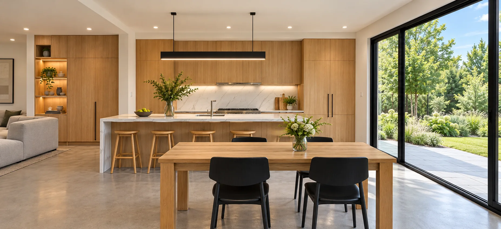
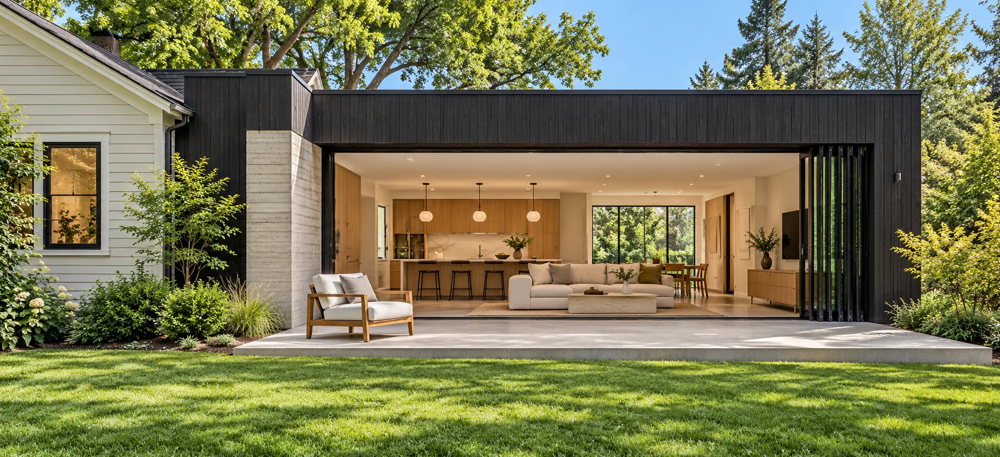
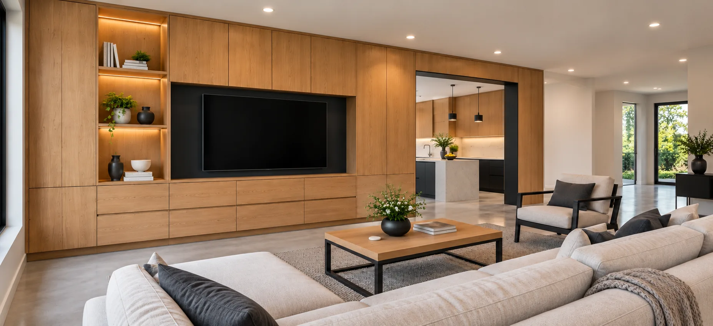
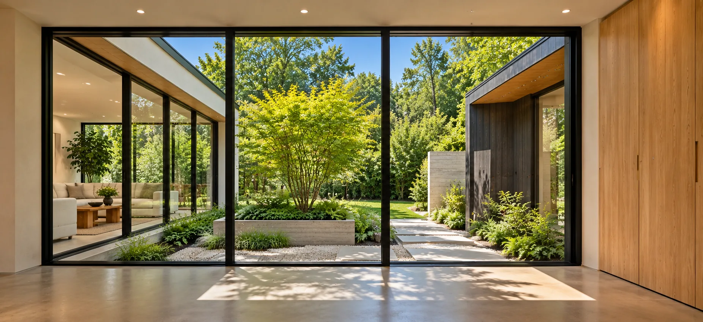
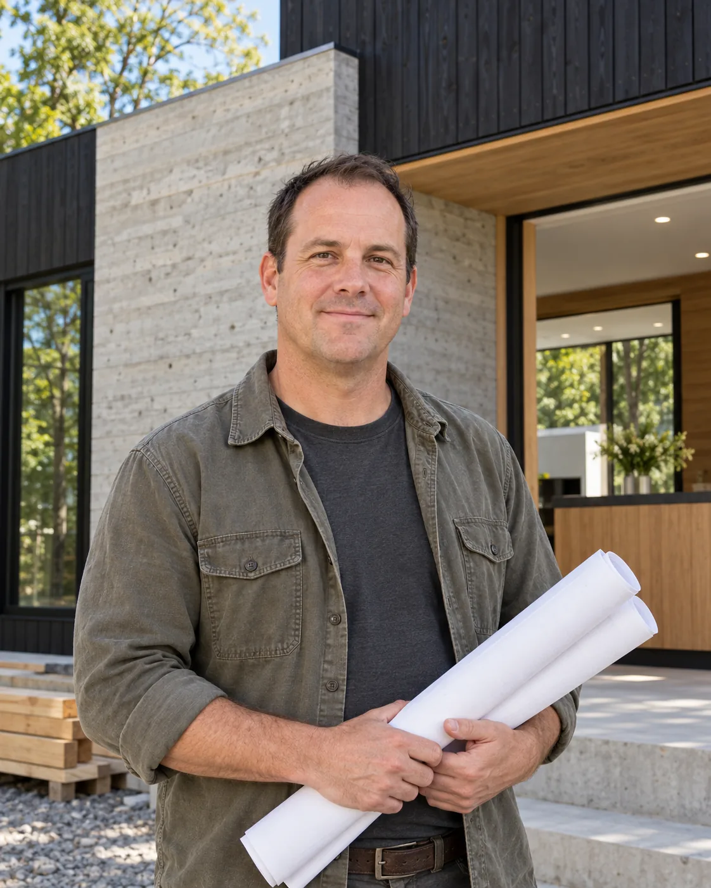

Design-Build
FORMWORK designs and builds under one contract.
Learn moreDesign-build firm in Travis Heights, Zilker, Allandale & Westlake Hills

FORMWORK designs and builds modern homes, additions and renovations in Austin. Our designers and builders work in the same room from the first sketch, so you see what every idea costs and how it gets built before you commit to it.
Over 100 design-build projects
How design-build works ↗What we do

FORMWORK designs and builds under one contract.
Learn more
Opening up closed floor plans, bringing in light, and rebuilding kitchens and baths in Austin’s older houses, with built-in storage and simple, durable materials.
Learn more
New modern homes designed around the lot, the sun and the heat, from small infill houses to family homes on larger lots.
Learn moreA word from our founder

Too many people fall in love with a set of drawings and only then find out what it costs to build them. We do it the other way around. I sit down with you and one of our builders on the first day, and we price the big ideas while they’re still sketches: the wall that comes out, the glass that faces west, the concrete floor. You decide with real numbers in front of you, and the house you get is the house you designed.
Taylor ReedFounder, FORMWORK
Meet the FORMWORK team ↗